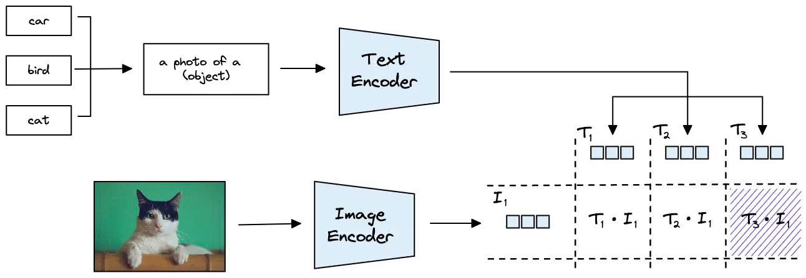

Zero-shot vs. Few-shot learning approaches for product classification using image + text modalities
Zero-shot learning is a learning paradigm in which a model predicts classes that were not observed during task-specific training by transferring knowledge from previously learned semantic representations.
Categories
Accuracy
Samples
Prepare product images, clean and concatenate text descriptions, and apply descriptive label mapping to maximize CLIP's capabilities.
In zero-shot learning, CLIP performs better when target classes are descriptive sentences rather than single words. We map raw category names to rich textual prompts for later feature encoding.
# Define detailed descriptions for all 21 categories
LABEL_MAP = {
"All Beauty": "Professional salon hair care, luxury perfumes, essential oils, and premium cosmetics",
"Beauty": "Daily personal care, hair styling tools, tanning lotions, and grooming products",
"Health & Personal Care": "Vitamins, dietary supplements, over-the-counter medicine, and wellness products",
"All Electronics": "Computer cables, blank media like DVDs, replacement batteries, and tech accessories",
"Electronics": "Consumer electronics, portable radios, scanners, and office electronic supplies",
"Cell Phones & Accessories": "Mobile phone screen protectors, cell phone cases, chargers, and handset accessories",
"Baby": "Baby furniture, cribs, strollers, and large infant travel gear",
"Baby Products": "Baby diapers, nursing pads, toddler toys, and everyday infant care accessories",
"Appliances": "Kitchen appliances, ice makers, cooktop accessories, and large household machines",
"Tools & Home Improvement": "Power tools, bathroom lighting fixtures, saw blades, and home repair hardware",
"Patio, Lawn & Garden": "Outdoor cooking tools, hydroponic supplies, gardening gear, and patio accessories",
"Pet Supplies": "Pet feeding bowls, aquarium breeding nets, animal grooming powder, and pet accessories",
"Arts, Crafts & Sewing": "Crafting tools, sewing supplies, painting kits, and DIY art materials",
"Automotive": "Car floor mats, automotive seat covers, vehicle accessories, and car care products",
"Clothing, Shoes & Jewelry": "Apparel, wristwatches, Halloween costumes, footwear, and fashion accessories",
"Grocery & Gourmet Food": "Packaged food, tea bags, cooking ingredients, and grocery snacks",
"Industrial & Scientific": "Industrial hardware, strong adhesives, lab equipment, and specialized scientific tools",
"Musical Instruments": "Drum accessories, speaker enclosures, guitars, and music performance gear",
"Office Products": "Office supplies, printer ink cartridges, wall calendars, and classroom bulletin boards",
"Sports & Outdoors": "Sports team apparel, weightlifting equipment, outdoor hunting gear, and fitness items",
"Toys & Games": "Remote control cars, puzzles, children's toys, and board games"
}
# Inside Dataset initialization:
self.original_class_names = sorted(self.df['categories'].unique().tolist())
# Apply LABEL_MAP specifically for Zero-shot approach
if self.use_label_map: # True when num_shots == 0
self.class_names = [LABEL_MAP.get(cat, cat) for cat in self.original_class_names]The RetailDataset class handles on-the-fly preprocessing. It converts images to RGB tensors and tokenizes the concatenated title and description into fixed-length token arrays.
class RetailDataset(Dataset):
# ... initialization ...
def __getitem__(self, idx):
row = self.df.iloc[idx]
# 1. Image Preprocessing
# Loads image and applies CLIP's native transform (Resize, Crop, Normalize)
img_path = os.path.join(self.images_path, f"{row['ImgId']}.jpg")
image_tensor = preprocess_image(img_path, self.preprocess_model)
# 2. Text Preprocessing
# Combines title & description, cleans text, and tokenizes (max 77 tokens)
text_token = preprocess_text(
row.get('title', ''),
row.get('description', '')
)
# 3. Label Target
label = torch.tensor(self.cat_to_idx[row['categories']], dtype=torch.long)
# Output formats per sample:
# image_tensor: [3, 224, 224] (Float)
# text_token: [77] (Int)
# label: [1] (Long)
return image_tensor, text_token, labelfrom torch.utils.data import DataLoader
# Initialize the unified dataset
dataset = RetailDataset(
dataframe=df,
images_path=IMAGES_DIR,
preprocess_model=clip_preprocess,
num_shots=0 # Triggers Zero-shot logic & LABEL_MAP
)
# Create DataLoader
loader = DataLoader(
dataset,
batch_size=32,
shuffle=False,
num_workers=2
)
# A single batch iteration yields:
# batch_images: torch.Size([32, 3, 224, 224])
# batch_texts: torch.Size([32, 77])
# batch_labels: torch.Size([32])🎯 Objective: Standardize diverse raw images and noisy, long text descriptions into clean, uniform tensor formats. This ensures the CLIP encoders extract high-quality, aligned embeddings without exceeding token limits or crashing due to memory constraints or corrupted data.
Before entering the Vision Transformer (ViT), images must be standardized to match CLIP's exact pre-training conditions.
(0.481, 0.458, 0.408) and Standard Deviation (0.268, 0.261, 0.275).def preprocess_image(image_path, clip_preprocess_fn):
try:
# 1. Standardize format to 3-Channel RGB
image = Image.open(image_path).convert("RGB")
# 2. Apply CLIP's native transforms automatically:
# - Resize(224, interpolation=BICUBIC)
# - CenterCrop(224)
# - ToTensor()
# - Normalize(mean=[0.4814, 0.4578, 0.4082],
# std=[0.2686, 0.2613, 0.2757])
return clip_preprocess_fn(image)
except Exception as e:
# Fallback for corrupted images to prevent DataLoader crashes
return torch.zeros(3, 224, 224)E-commerce product descriptions are often noisy, containing HTML links, brackets, and numbers. We apply aggressive cleaning to extract pure semantic keywords before tokenization.
import string, re
from nltk.corpus import stopwords
stop_words = set(stopwords.words('english'))
def clean_text(text):
if not isinstance(text, str) or text == "": return "product"
text = text.lower()
text = re.sub(r'\[.*?\]', '', text) # Remove brackets
text = re.sub(r'https?://\S+|www\.\S+', '', text) # Remove URLs
text = re.sub(r'[%s]' % re.escape(string.punctuation), '', text) # Remove punctuation
text = re.sub(r'\w*\d\w*', '', text) # Remove words with numbers
# Filter stopwords and words shorter than 2 chars
words = text.split()
cleaned_words = [w for w in words if w not in stop_words and len(w) > 2]
return " ".join(cleaned_words)The Problem: CLIP's Text Encoder is strictly limited to 77 tokens. Long product descriptions get truncated, causing the model to lose valuable semantic context.
The Solution: We chunk long text into segments of ~60 words, encode each chunk independently, and compute the mean embedding. This hybrid approach perfectly preserves long-context data.
def encode_long_text_wrapper(model, category, description, device):
# Split description into manageable ~60 word chunks
words = description.split()
chunk_size = 60
str_chunks = [" ".join(words[i:i+chunk_size]) for i in range(0, len(words), chunk_size)]
if not str_chunks: str_chunks = [""]
chunk_features = []
for s in str_chunks:
prompt = f"Category: {category}. {s}"
# Tokenize (Fits comfortably under the 77-token limit)
tokens = clip.tokenize(prompt, truncate=True).to(device)
with torch.no_grad():
feat = model.encode_text(tokens).float()
# Normalize each chunk's embedding
feat /= feat.norm(dim=-1, keepdim=True)
chunk_features.append(feat)
# Calculate average embedding across all chunks
final_feat = torch.mean(torch.stack(chunk_features), dim=0)
# Final L2 Normalization to ensure valid Cosine Similarity matching
return final_feat / final_feat.norm(dim=-1, keepdim=True)🎯 Objective: Pass the preprocessed images and the text prompts through CLIP's parallel encoders to extract 512-dimensional feature vectors.
The preprocessed image tensor is passed through CLIP's Vision Transformer (ViT-L14). This outputs a single, global feature vector representing the visual content of the product. Notice that we perform L2 Normalization immediately after extraction to prepare for the similarity matching step.
[Batch, 3, 224, 224][Batch, 768]# --- ENCODE IMAGE ---
with torch.no_grad():
# Pass image batch through Vision Transformer
# Output shape: [Batch, 768]
image_features = self.clip.encode_image(image).float()
# L2 Normalization (Crucial for computing Cosine Similarity later)
image_features = image_features / image_features.norm(dim=-1, keepdim=True)Why use LABEL_MAP? Raw category names (e.g., "Beauty", "Baby") are too abstract for CLIP. By concatenating the rich descriptive prompt (from our LABEL_MAP) with the product's actual description chunks, we provide explicit semantic context to the Text Encoder.
Below is the wrapper function showing exactly how the category mapping is concatenated with the text chunk (prompt = f"Category: {category}. {s}"):
def encode_long_text_wrapper(model, category, description, device):
words = description.split()
chunk_size = 60
str_chunks = [" ".join(words[i:i+chunk_size]) for i in range(0, len(words), chunk_size)]
if not str_chunks: str_chunks = [""]
chunk_features = []
for s in str_chunks:
# 🔑 Core Prompt Engineering:
# Inject the LABEL_MAP category description alongside the item description
prompt = f"Category: {category}. {s}"
tokens = clip.tokenize(prompt, truncate=True).to(device)
with torch.no_grad():
feat = model.encode_text(tokens).float()
feat /= feat.norm(dim=-1, keepdim=True)
chunk_features.append(feat)
# Average chunk embeddings to bypass the 77-token limit
final_feat = torch.mean(torch.stack(chunk_features), dim=0)
return final_feat / final_feat.norm(dim=-1, keepdim=True)During the forward pass, the model dynamically iterates and encodes 21 distinct text vectors (one for each class) for each image sample in the batch.
# --- ENCODE TEXT FOR 21 CLASSES ---
all_text_features = []
for i in range(batch_size):
desc = text[i] if isinstance(text[i], str) else ""
# Iterate over all 21 mapped classes and encode them using the wrapper
cls_feats = [encode_long_text_wrapper(self.clip, cls, desc, image.device)
for cls in class_names]
# Stack into shape: [21, 768]
feat = torch.stack(cls_feats).squeeze(1)
all_text_features.append(feat)
# Final text_features shape: [Batch, 21, 768]
text_features = torch.stack(all_text_features)🎯 Objective: Calculate the Cosine Similarity between the image vector and the 21 text vectors, then apply Softmax to determine the final predicted class.

Similarity Matching Process: The encoded Image vector (I1) is multiplied by each of the encoded Text vectors (T1, T2, T3...) via dot product. The text prompt that yields the highest similarity score represents the predicted class.
Because both our image and text tensors are already L2 normalized, taking their Dot Product mathematically equates to their Cosine Similarity. We use torch.bmm to execute this multiplication efficiently across the entire batch.
# Reshape for matrix multiplication
# image_features shape: [Batch, 1, 768]
# text_features transposed shape: [Batch, 768, 21]
# Compute Cosine Similarity (Logits)
# Resulting logits shape: [Batch, 21]
logits = torch.bmm(image_features.unsqueeze(1), text_features.transpose(1, 2)).squeeze(1)The raw similarity scores (logits) are passed through a Softmax function to convert them into a valid probability distribution. Finally, Argmax extracts the index of the class with the highest probability score.
# 1. Convert similarity scores to probabilities (Sum to 1.0)
probabilities = torch.softmax(logits, dim=-1)
# 2. Get the final predicted class index
predicted_class_idx = torch.argmax(probabilities, dim=-1)
return probabilities, predicted_class_idxCompute accuracy, precision, recall, and F1-scores across all categories.
from sklearn.metrics import accuracy_score, precision_recall_fscore_support, confusion_matrix
# Get predictions on full test set
predictions = []
ground_truth = []
with torch.no_grad():
for batch_images, batch_texts, batch_labels in test_loader:
# Forward pass
img_feats = model.get_image_features(batch_images)
txt_feats = model.get_text_features(**batch_texts)
# Fuse and normalize
fused = (img_feats + txt_feats) / 2.0
fused = fused / fused.norm(p=2, dim=-1, keepdim=True)
# Compute similarity and predict
scores = torch.matmul(fused, category_embeddings.T)
preds = torch.argmax(scores, dim=1)
predictions.extend(preds.cpu().numpy())
ground_truth.extend(batch_labels.cpu().numpy())
# Compute metrics
accuracy = accuracy_score(ground_truth, predictions)
precision, recall, f1, _ = precision_recall_fscore_support(
ground_truth, predictions, average='macro'
)
print(f"Accuracy: {accuracy:.4f}")
print(f"Precision: {precision:.4f}")
print(f"Recall: {recall:.4f}")
print(f"F1-Score: {f1:.4f}")# Per-category metrics
from sklearn.metrics import classification_report
report = classification_report(ground_truth, predictions,
target_names=categories,
output_dict=True)
# Confusion matrix
conf_matrix = confusion_matrix(ground_truth, predictions)
# Shape: (21, 21)
# Identify problematic categories
for cat_idx, category in enumerate(categories):
cat_precision = report[str(cat_idx)]['precision']
cat_recall = report[str(cat_idx)]['recall']
cat_f1 = report[str(cat_idx)]['f1-score']
print(f"{category}: P={cat_precision:.3f}, R={cat_recall:.3f}, F1={cat_f1:.3f}")Compare performance metrics, computational resources, and configurations across all Zero-shot and Few-shot variations.
| MODEL | PRECISION ↑ | RECALL ↑ | F1-SCORE ↑ | ACCURACY ↑ |
|---|---|---|---|---|
| Zero-shot (No Aug) | 40.14% | 29.94% | 26.73% | 29.92% |
| Zero-shot (Aug) | 39.05% | 33.28% | 32.55% | 33.28% |
| Few-shot (3 Shots) | 42.54% | 37.62% | 35.87% | 37.62% |
| Few-shot (5 Shots) | 46.74% | 44.4% | 42.7% | 44.4% |
| Few-shot (10 Shots) | 54.31% | 52.34% | 51.38% | 52.34% |
| Few-shot (16 Shots) | 55.94% | 55.62% | 54.04% | 55.62% |
| Few-shot (32 Shots) | 61.57% | 62.29% | 60.29% | 62.29% |
| Few-shot (64 Shots) | 68.31% | 68.65% | 68.39% | 68.65% |
| MODEL | INFERENCE TIME ↓ (MS) | PARAMETERS ↓ (M) | MODEL SIZE ↓ (MB) |
|---|---|---|---|
| Zero-shot (No Aug) | 110.1 | 428.01 | 890.38 |
| Zero-shot (Aug) | 120.24 | 428.01 | 890.38 |
| Few-shot (3 Shots) | 10.7512 | 428.3 | 891.42 |
| Few-shot (5 Shots) | 11.0503 | 428.28 | 891.42 |
| Few-shot (10 Shots) | 11.0081 | 428.28 | 891.42 |
| Few-shot (16 Shots) | 10.9995 | 428.28 | 891.42 |
| Few-shot (32 Shots) | 10.9940 | 428.28 | 891.42 |
| Few-shot (64 Shots) | 10.9873 | 428.28 | 891.42 |
📝 Note: Inference time is calculated as average time per sample. Parameters count reflects trainable parameters (MLP head for Few-shot, 0 for Zero-shot backbone).
| Dataset | 42,000 samples (Image + Text) |
| Classes | 21 categories |
| Preprocessing |
IMAGE: Resize → CenterCrop → Normalize TEXT: Lowercase → Remove URLs/HTML → Remove stopword, punctuation → Normalize |
| Early Stopping | Patience |
| Model Architecture | CLIP (ViT-L14) |
| Learning Rate | 1e-3 |
| Max Epochs | 30 |
| Optimizer | Adam |
| Loss Function | CrossEntropyLoss |
Few-shot learning is an approach designed for scenarios where only a very limited number of labeled examples are available for each target category. Instead of relying on large-scale annotated datasets, the objective is to enable a learning system to generalize effectively from only a few representative samples per class. This setting is particularly important in practical applications where data collection and annotation are expensive, time-consuming, or difficult to obtain for every category.
Categories
Shots per Category
Best Accuracy
Instead of using the entire training dataset, we randomly sample a strictly limited number of instances (shots) for each of the 21 categories. This data is then formatted into multimodal tensors.
We group the training dataframe by categories and sample exactly num_shots (e.g., 5, 16, or 64) examples per class. This dramatically reduces the training data, simulating a true few-shot scenario.
# Randomly sample K-shots per category for the training set
if num_shots > 0 and 'categories' in train_df.columns:
train_df = train_df.groupby('categories', group_keys=False).apply(
lambda x: x.sample(n=min(len(x), num_shots), random_state=42)
).reset_index(drop=True)
# Example: 16 shots * 21 categories = 336 total training samplesThe RetailDataset constructs one multimodal training sample at a time by retrieving a single row from the metadata table and transforming its visual, textual, and categorical information into model-ready tensors. Each sample consists of an image tensor, a text token sequence, and a numerical class label.
class RetailDataset(Dataset):
def __init__(self, dataframe, images_path, preprocess_model, num_shots=0):
self.df = dataframe.reset_index(drop=True)
self.images_path = images_path
self.preprocess_model = preprocess_model
# Disable LABEL_MAP mapping for Few-shot (num_shots > 0)
self.use_label_map = (num_shots == 0)
self.original_class_names = sorted(self.df['categories'].unique().tolist())
self.cat_to_idx = {cat: i for i, cat in enumerate(self.original_class_names)}
def __getitem__(self, idx):
row = self.df.iloc[idx]
# 1. Image: [3, 224, 224] Float Tensor
img_path = os.path.join(self.images_path, f"{row['ImgId']}.jpg")
image_tensor = preprocess_image(img_path, self.preprocess_model)
# 2. Text: [77] Integer Tensor (Concatenated Title & Description)
text_token = preprocess_text(row.get('title', ''), row.get('description', ''))
# 3. Label: [1] Long Tensor (Integer Class Index: 0 -> 20)
label = torch.tensor(self.cat_to_idx[row['categories']], dtype=torch.long)
return image_tensor, text_token, labelThe dataset is wrapped in a PyTorch DataLoader to feed batches of images, text, and labels simultaneously into the backbone.
from torch.utils.data import DataLoader
# Initialize Few-shot Dataset
dataset = RetailDataset(
dataframe=train_df,
images_path=IMAGES_DIR,
preprocess_model=clip_preprocess,
num_shots=16 # K-shot parameter activates few-shot mode
)
# Create DataLoader
loader = DataLoader(dataset, batch_size=32, shuffle=True, num_workers=2)
# A single batch iteration yields:
# batch_images: torch.Size([32, 3, 224, 224])
# batch_texts: torch.Size([32, 77])
# batch_labels: torch.Size([32])🎯 Objective: Standardize raw images and noisy textual descriptions into clean, uniform tensor formats. This hybrid text-image feature fusion process ensures high-quality feature extraction without exceeding token limits or crashing due to faulty data.
Images must be strictly standardized to match the exact pre-training conditions expected by the feature extractor.
def preprocess_image(image_path, clip_preprocess_fn):
try:
# 1. Standardize format to 3-Channel RGB
image = Image.open(image_path).convert("RGB")
# 2. Apply CLIP's native transforms automatically:
# - Resize(224, interpolation=BICUBIC)
# - CenterCrop(224)
# - ToTensor()
# - Normalize(mean=[0.4814, 0.4578, 0.4082],
# std=[0.2686, 0.2613, 0.2757])
return clip_preprocess_fn(image)
except Exception as e:
# Fallback for corrupted images to prevent DataLoader crashes
return torch.zeros(3, 224, 224)Raw e-commerce descriptions are concatenated with titles and heavily cleaned (removing URLs, brackets, digits, and NLTK stopwords).
import re, string
from nltk.corpus import stopwords
stop_words = set(stopwords.words('english'))
def clean_text(text):
if not isinstance(text, str) or text == "": return "product"
text = text.lower()
text = re.sub(r'\[.*?\]', '', text) # Remove brackets
text = re.sub(r'https?://\S+|www\.\S+', '', text) # Remove URLs
text = re.sub(r'[%s]' % re.escape(string.punctuation), '', text)
text = re.sub(r'\w*\d\w*', '', text) # Remove numbers
# Filter stopwords
words = text.split()
cleaned = [w for w in words if w not in stop_words and len(w) > 2]
return " ".join(cleaned)
[Batch, 768] for both image and text.[Batch, 1536] (from 768 + 768).def forward(self, image, text):
# 1. Feature Extraction (Frozen CLIP)
with torch.no_grad():
image_features = self.model.encode_image(image).float() # [Batch, 768]
text_features = self.model.encode_text(text).float() # [Batch, 768]
# 2. L2 Normalization
image_features = image_features / image_features.norm(dim=-1, keepdim=True)
text_features = text_features / text_features.norm(dim=-1, keepdim=True)
# 3. Concatenation
combined = torch.cat((image_features, text_features), dim=1) # [Batch, 1536]
# 4. Normalize concatenated features
combined = self.layer_norm(combined) # [Batch, 512]
# 5. pass to the Classifier Head
return self.classifier(combined)
The multimodal features (512-dim) pass through a Multilayer Perceptron (MLP) for classification. This is accompanied by a strict training cycle within the fit() function to optimize performance, and a predict() function for final inference.
The MLP network is designed with 2 linear layers interleaved with regularization mechanisms:
[Batch, 1536] and maps it to an output of [Batch, 512] to learn high-level hidden representations.[Batch, 512] and maps it directly to unnormalized scores (logits). Output Tensor: [Batch, 21] corresponding to the 21 categories.# Initialize Classification Head in __init__
self.classifier = nn.Sequential(
nn.Linear(projection_dim * 2, 512), # From 1536 -> 512
nn.ReLU(),
nn.Dropout(0.2), # Prevents Overfitting
nn.Linear(512, num_classes) # From 512 -> Output: 21 logits
)fit function)Detailed breakdown of the computation and weight updates during the training loop:
outputs (Logits) with shape [Batch, 21].CrossEntropyLoss function compares outputs with the ground truth labels to compute an error value (Scalar Loss Tensor).loss.backward()): Backpropagation automatically computes the derivative (gradient) for all trainable weights in the MLP. optimizer.step()): The Adam optimizer uses the computed gradients to update the weights, helping to minimize the Loss for the next batch. val_acc is the highest so far, it saves the Model Weights. If accuracy doesn't improve after PATIENCE epochs, training is halted immediately.def fit(self, train_loader, val_loader):
criterion = nn.CrossEntropyLoss()
optimizer = optim.Adam(self.parameters(), lr=LEARNING_RATE)
# ... initialize storage variables ...
for epoch in range(EPOCHS):
self.train()
for images, texts, labels in train_loader:
optimizer.zero_grad() # Clear gradients from previous batch
outputs = self(images, texts) # Forward pass -> [Batch, 21]
loss = criterion(outputs, labels)# Compute Scalar Loss
loss.backward() # Compute Gradients for MLP layers
optimizer.step() # Update weights
# --- EVALUATION & SAVING ---
val_loss, val_acc, _ = self.predict(val_loader, criterion, DEVICE)
if val_acc > best_val_acc:
best_val_acc = val_acc
patience_counter = 0
torch.save(self.state_dict(), SAVE_MODEL_PATH) # Save checkpoint
else:
patience_counter += 1
if patience_counter >= PATIENCE:
print("[Early Stopping] Halted.")
break
The predict function is designed to handle a complete end-to-end pipeline for a single raw data sample. Here is the detailed workflow for processing and predicting on new unseen data:
unsqueeze(0) adds a dummy Batch dimension (since the model always expects batches) before moving the tensor to the active device.clip.tokenize(..., truncate=True) function ensures that long text is automatically truncated so it safely fits within the 77-token limit of the model.torch.no_grad() context is enabled to turn off gradient tracking (saving memory). The generated logits are passed through a Softmax function to convert them into a normalized probability distribution (0.0 to 1.0). Then, torch.max extracts the highest probability score (Top-1) and its corresponding index..item() method to pull the numerical values out of the PyTorch Tensors into standard Python data types. It converts the probability to a percentage format (%) and automatically maps the predicted index to its actual human-readable Category Name (if the class_names list is provided).Compare performance metrics, computational resources, and configurations across Few-shot variations.
| MODEL | PRECISION ↑ | RECALL ↑ | F1-SCORE ↑ | ACCURACY ↑ |
|---|---|---|---|---|
| Zero-shot (No Aug) | 40.14% | 29.94% | 26.73% | 29.92% |
| Zero-shot (Aug) | 39.05% | 33.28% | 32.55% | 33.28% |
| Few-shot (3 Shots) | 42.54% | 37.62% | 35.87% | 37.62% |
| Few-shot (5 Shots) | 46.74% | 44.4% | 42.7% | 44.4% |
| Few-shot (10 Shots) | 54.31% | 52.34% | 51.38% | 52.34% |
| Few-shot (16 Shots) | 55.94% | 55.62% | 54.04% | 55.62% |
| Few-shot (32 Shots) | 61.57% | 62.29% | 60.29% | 62.29% |
| Few-shot (64 Shots) | 68.31% | 68.65% | 68.39% | 68.65% |
| MODEL | INFERENCE TIME ↓ (MS) | PARAMETERS ↓ (M) | MODEL SIZE ↓ (MB) |
|---|---|---|---|
| Zero-shot (No Aug) | 110.1 | 428.01 | 890.38 |
| Zero-shot (Aug) | 120.24 | 428.01 | 890.38 |
| Few-shot (3 Shots) | 10.7512 | 428.3 | 891.42 |
| Few-shot (5 Shots) | 11.0503 | 428.28 | 891.42 |
| Few-shot (10 Shots) | 11.0081 | 428.28 | 891.42 |
| Few-shot (16 Shots) | 10.9995 | 428.28 | 891.42 |
| Few-shot (32 Shots) | 10.9940 | 428.28 | 891.42 |
| Few-shot (64 Shots) | 10.9873 | 428.28 | 891.42 |
📝 Note: Parameters count reflects trainable parameters (MLP head for Few-shot).
| Dataset | 42,000 samples (Image + Text) |
| Classes | 21 categories |
| Preprocessing |
IMAGE: Resize → CenterCrop → Normalize TEXT: Lowercase → Remove URLs/HTML → Remove stopword, punctuation → Normalize |
| Early Stopping | Patience |
| Model Architecture | CLIP (ViT-L14) |
| Learning Rate | 1e-3 |
| Max Epochs | 30 |
| Optimizer | Adam |
| Loss Function | CrossEntropyLoss |